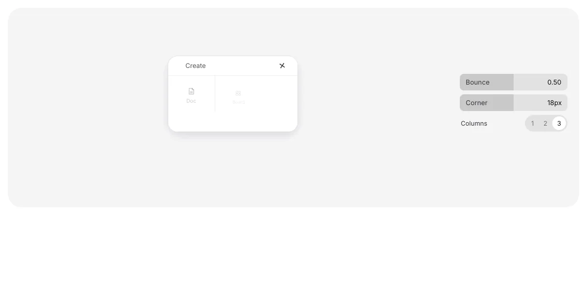

Bloom Menu
A Create pill blooms into a grid of actions: its box morphs open, the label glides into the title, the plus turns into the close cross and tiles pop in.

Usage
Add glowkit next to eframe:
cargo add glowkit eframeThen draw it inside any egui Ui:
use glowkit::prelude::*;
use glowkit::interactions::{BloomMenu, BeIcon};
let picked = BloomMenu::new("Create")
.item(BeIcon::Doc, "Doc")
.item(BeIcon::Grid, "Board")
.item(BeIcon::Table, "Table")
.item(BeIcon::Folder, "Folder")
.item(BeIcon::Bell, "Reminder")
.item(BeIcon::Link, "Link")
.show(ui);Prefer to own the code? The glowkit CLI copies this component's source into your project, shadcn-style:
cargo install glowkit-cli
glowkit add beui-bloom-menuEquivalent to
If you know this pattern from beUI, Bloom Menu is the Rust version: an original egui implementation, not a port, that runs natively and in WebAssembly.
- Bloom MenubeUI
About Bloom Menu
Bloom Menu is one of 71 components in glowkit's Micro-interactions category. It lives in the glowkit-interactions crate, enabled by the interactions feature of glowkit (on by default). It reads its colors from the active glowkit theme, so it matches the rest of your app in light, dark or a custom brand theme, and every color, size and timing has a setter to override it.
Small, physical details that make an app feel finished: liquid toggles, slide-to-confirm, swipe actions, reorderable lists, pull to refresh, emoji reactions, rolling counters, success checks, error shakes and notification badges, each tuned with springs.